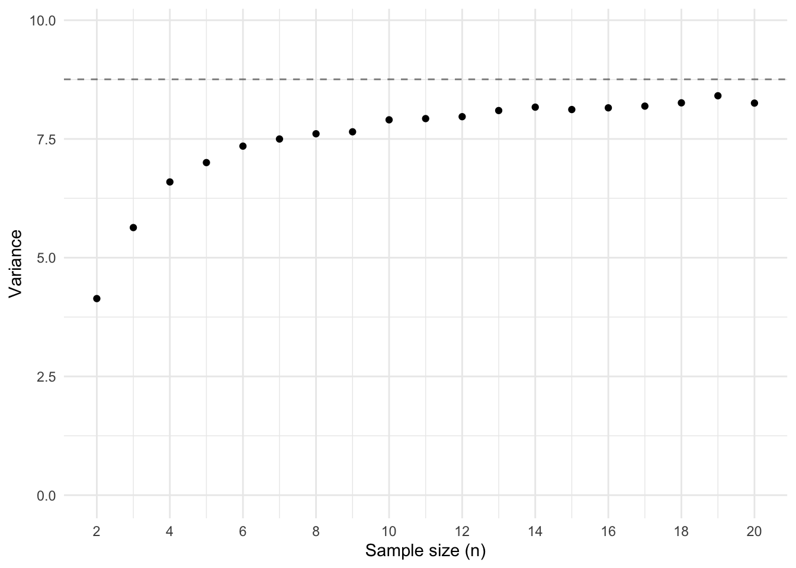
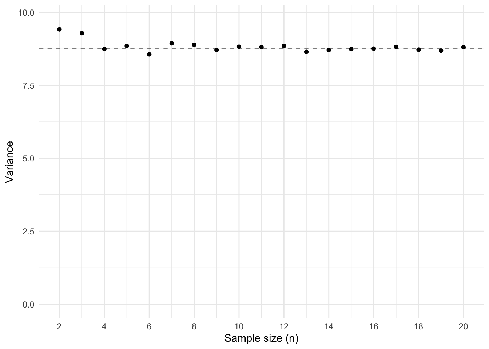
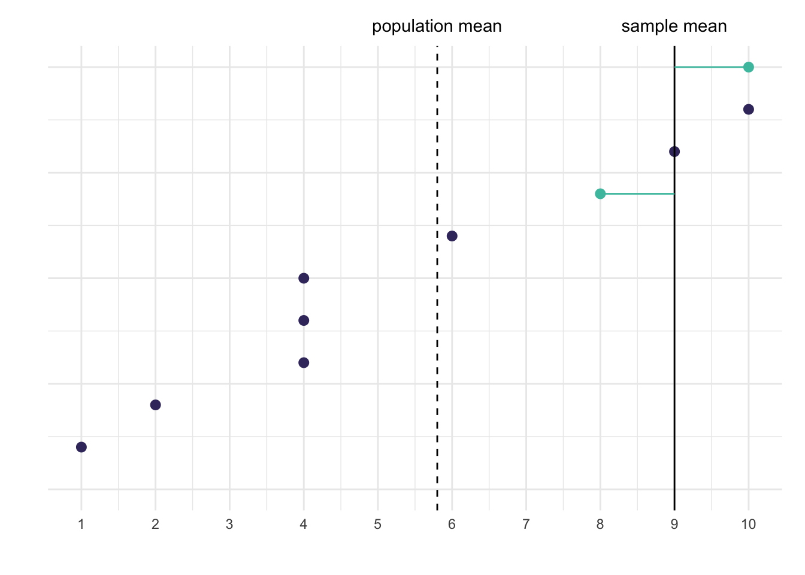
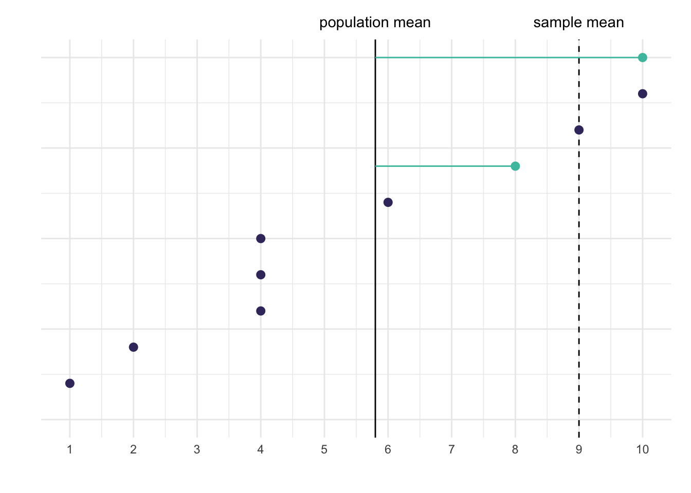
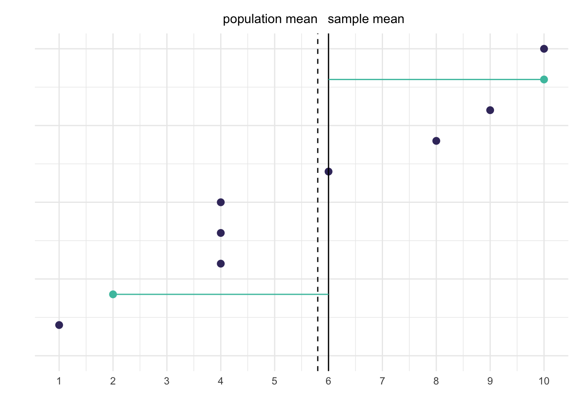
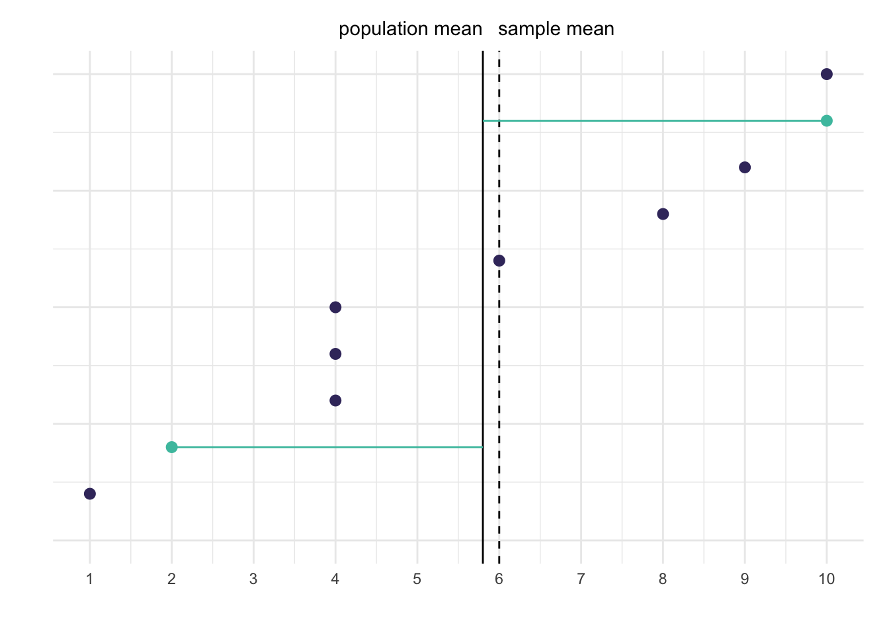
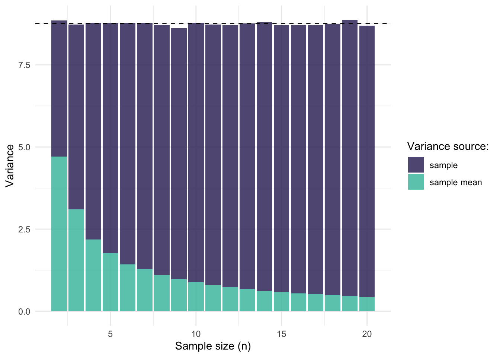

In a recent tweet I asked the question why we use $n - 1$ to calculate the variance of a sample. Many people contributed an answer, but many of them were of the type I feared. Most consisted of some statistical jargon that confuses me more, rather than less. Other responses were very useful, though, so I recommend checking out the replies to the tweet. In this post, I will try to describe my favorite way of looking at the issue.
statistics
Published
August 5, 2020
Many thanks to the people who replied to my tweet about why you should divide by \(n - 1\). Below I try to show the intuition behind why this is necessary. If you want to follow along in R, you can copy the code from each code section; beginning with some setup code.
Code
# Load packageslibrary(tidyverse)library(viridis)# Create our own variance function that returns the population or sample # variancemy_var <-function(x, population =FALSE) {if (population) {sum((x -mean(x))^2)/length(x) } else {sum((x -mean(x))^2)/(length(x) -1) }}# Set the default ggplot themetheme_set(theme_minimal())# Set optionsoptions(knitr.kable.NA ="",digits =2)
The formula
The formula for calculating the variance is:
\[\frac{\sum(x_i - \overline{x})^2}{n}\]
The variance is a measure of the dispersion around the mean, and in that sense this formula makes sense. We calculate all the deviations from the mean (\(x_i - \overline{x}\)), square them (for reasons I might go into in a different post) and sum them. We then divide this sum by the number of observations as a scaling factor. If we ignore this number, we could get a very high variance simply by observing a lot of data. So, to fix that problem, we divide by the total number of observations.
However, this is the formula for the population variance. The formula for calculating the variance of a sample is:
\[\frac{\sum(x_i - \overline{x})^2}{n - 1}\]
Why do we divide by n - 1?
If you Google this question, you will get a variety of answers. You might find a mathematical proof of why it needs to be \(n - 1\) or something about degrees of freedom. These kinds of answers don’t work for me. I trust them to be correct, but it doesn’t produce any insight. It does not actually help me understand 1) the problem and 2) why the solution is the solution that it is. So, below I am going to try to figure it out in a way that actually makes conceptual and intuitive sense (to me).
The problem
The problem with using the population variance formula to calculate the variance of a sample is that it is biased. It is biased in that it produces an underestimation of the true variance. Let’s demonstrate that with some simulated data.
We simulate a population of 1000 data points from a uniform distribution with a range from 1 to 10. Below I show the histogram that represents our population.
Code
# Set the seed for reproducibilityset.seed(1212)# Create a population consisting of values ranging from 1 to 10population <-sample(1:10, size =1000, replace =TRUE)# Calculate the population variancesigma <-my_var(population, population =TRUE)# Visualize the populationggplot(tibble(population = population), mapping =aes(x = population)) +geom_bar(alpha = .85) +labs(x ="x", y ="n") +scale_x_continuous(breaks =1:10)
Figure 1: The population in our example
The variance is 8.76. Note that this is our population variance (often denoted as \(\sigma^2\)). We want to estimate this value using samples drawn from our population, so let’s do that.
Code
# Draw a single sample from the populationsample <-sample(population, size =5)
To start, we can draw a single sample of size 5. Say we do that and get the following values: 7, 6, 3, 5, 5. We can then calculate the variance in two ways, using division by \(n\) and division by \(n - 1\). In the former case, this will result in 1.76 and in the latter case it results in 2.2.
Now let’s do that many many times. Below I show the results of draws from our population. I simulated drawing samples of size 2 to 10, each 1000 different times. I then plotted for each sample size the average biased variance (dividing by \(n\); Figure 2 (a)) and the average unbiased variance (dividing by \(n - 1\); Figure 2 (b)).
Code
# Create an empty data frame with the simulation parameterssamples <-crossing(n =2:20,i =1:1000 )# Calculate the mean, sample variance, and population variance # for each combination of n and isamples <- samples %>%rowwise() %>%mutate(var_unbiased =my_var(sample(population, n), population =FALSE),var_biased =my_var(sample(population, n), population =TRUE) )# Plot the results in two separate plotsggplot(samples, aes(x = n, y = var_biased)) +geom_hline(yintercept = sigma, linetype ="dashed", alpha = .5) +stat_summary(fun ="mean", geom ="point") +labs(x ="Sample size (n)", y ="Variance") +coord_cartesian(ylim =c(0, sigma +1)) +scale_x_continuous(breaks =seq(from =2, to =20, by =2))ggplot(samples, aes(x = n, y = var_unbiased)) +geom_hline(yintercept = sigma, linetype ="dashed", alpha = .5) +stat_summary(fun ="mean", geom ="point") +labs(x ="Sample size (n)", y ="Variance") +coord_cartesian(ylim =c(0, sigma +1)) +scale_x_continuous(breaks =seq(from =2, to =20, by =2))

(a) Variance with division by n

(b) Variance with division by n - 1
Figure 2: A demonstration that dividing by 1 causes a bias
We see that the biased measure of variance is indeed biased. The average variance is lower than the true variance (indicated by the dashed line), for each sample size. We also see that the unbiased variance is indeed unbiased. On average, the sample variance matches that of the population variance.
The results of using the biased measure of variance reveals several clues for understanding the solution to the bias. We see that the amount of bias is larger when the sample size of the samples is smaller. So the solution should be a function of sample size, such that the required correction will be smaller as the sample size increases. We also see that that the bias at \(n = 2\) is half that of the true variance, \(\frac23\) at \(n = 3\), \(\frac34\) at \(n = 4\), and so on. Interesting.
But before we go into the solution, we still need to figure out what exactly causes the bias.
Ideally we would estimate the variance of the sample by subtracting each value from the population mean. However, since we don’t know what the population mean is, we use the next best thing—the sample mean. This is where the bias comes in. When you use the sample mean, you’re guaranteed that the mean lies somewhere within the range of your data points. In fact, the mean of a sample minimizes the sum of squared deviations from the mean. This means that the sum of deviations from the sample mean is almostalways smaller than the sum of deviations from the population mean. The only exception to that is when the sample mean happens to be the population mean.
Let’s illustrate this with a few graphs. Below are two graphs in which I show 10 data points that represent our population. I also highlight two data points from this population, which represents our sample. In the left graph I show the deviations from the sample mean and in the right graph the deviations from the population mean.
Code
# Create the populationx <-c(1, 2, 4, 4, 4, 6, 8, 9, 10, 10)# Create a samplesample1 <-tibble(index =1:10,value = x,sample =c(0, 0, 0, 0, 0, 0, 1, 0, 0, 1),mean =mean(c(8, 10)),mu =mean(x) ) %>%mutate(mean =ifelse(sample ==1, mean, NA),mu =ifelse(sample ==1, mu, NA) )# Plot the resultsggplot(sample1, aes(x = index, y = value, color =factor(sample))) +geom_hline(aes(yintercept = mu), linetype ="dashed") +geom_point(size =2.5) +geom_hline(aes(yintercept = mean), linetype ="solid") +geom_segment(aes(xend = index, y = mean, yend = value), linetype ="solid") +annotate("text", x =11, y =5.8, label ="population mean") +annotate("text", x =11, y =9, label ="sample mean") +labs(x ="", y ="") +scale_color_viridis(option ="mako", discrete =TRUE, begin = .25, end = .75 ) +coord_flip(clip ="off", xlim =c(0, 10)) +scale_y_continuous(breaks =1:10) +guides(color ="none") +theme(axis.text.y =element_blank(),plot.margin =unit(c(2, 1, 1, 1), "lines") )ggplot(sample1, aes(x = index, y = value, color =factor(sample))) +geom_hline(aes(yintercept = mean), linetype ="dashed") +geom_point(size =2.5) +geom_hline(aes(yintercept = mu), linetype ="solid") +geom_segment(aes(xend = index, y = mu, yend = value), linetype ="solid") +annotate("text", x =11, y =5.8, label ="population mean") +annotate("text", x =11, y =9, label ="sample mean") +labs(x ="", y ="") +scale_color_viridis(option ="mako", discrete =TRUE, begin = .25, end = .75 ) +coord_flip(clip ="off", xlim =c(0, 10)) +scale_y_continuous(breaks =1:10) +guides(color ="none") +theme(axis.text.y =element_blank(),plot.margin =unit(c(2, 1, 1, 1), "lines") )

(a) Deviations from the sample mean

(b) Deviations from the population mean
Figure 3: An illustration of how using a sample mean introduces bias
We see that in the left graph the sum of squared deviations is much smaller than in the right graph. The sum is \((8 - 9)² + (10 - 9)² = 2\) in the left graph and in the right graph it’s \((8 - 5.8)² + (10 - 5.8)² = 22.48\). The sum is smaller when using the sample mean compared to using the population mean.
This is true for any sample you draw from the population (again, except when the sample mean happens to be the same as the population mean). Let’s look at one more draw where the sample mean is closer to the population mean.
Code
# Create a second samplesample2 <-tibble(index =1:10,value = x,sample =c(0, 1, 0, 0, 0, 0, 0, 0, 1, 0),mean =mean(c(2, 10)),mu =mean(x) ) %>%mutate(mean =ifelse(sample ==1, mean, NA),mu =ifelse(sample ==1, mu, NA) )# Plot the resultsggplot(sample2, aes(x = index, y = value, color =factor(sample))) +geom_hline(aes(yintercept = mu), linetype ="dashed") +geom_point(size =2.5) +geom_hline(aes(yintercept = mean), linetype ="solid") +geom_segment(aes(xend = index, y = mean, yend = value), linetype ="solid") +annotate("text", x =11, y =4.92, label ="population mean") +annotate("text", x =11, y =6.7, label ="sample mean") +labs(x ="", y ="") +scale_color_viridis(option ="mako", discrete =TRUE, begin = .25, end = .75 ) +coord_flip(clip ="off", xlim =c(0, 10)) +scale_y_continuous(breaks =1:10) +guides(color ="none") +theme(axis.text.y =element_blank(),plot.margin =unit(c(2, 1, 1, 1), "lines") )ggplot(sample2, aes(x = index, y = value, color =factor(sample))) +geom_hline(aes(yintercept = mean), linetype ="dashed") +geom_point(size =2.5) +geom_hline(aes(yintercept = mu), linetype ="solid") +geom_segment(aes(xend = index, y = mu, yend = value), linetype ="solid") +annotate("text", x =11, y =4.92, label ="population mean") +annotate("text", x =11, y =6.7, label ="sample mean") +labs(x ="", y ="") +scale_color_viridis(option ="mako", discrete =TRUE, begin = .25, end = .75 ) +coord_flip(clip ="off", xlim =c(0, 10)) +scale_y_continuous(breaks =1:10) +guides(color ="none") +theme(axis.text.y =element_blank(),plot.margin =unit(c(2, 1, 1, 1), "lines") )

(a) Deviations from the sample mean

(b) Deviations from the population mean
Figure 4: Another illustration of how using a sample mean introduces bias
Here the sum in the left graph is \((2 - 6)² + (10 - 6)² = 32\) and the sum in the right graph is \((2 - 5.8)² + (10 - 5.8)² = 32.08\). The difference is small now, but using the sample mean still results in a smaller sum compared to using the population mean.
In short, the source of the bias comes from using the sample mean instead of the population mean. The sample mean is always guaranteed to be in the middle of the observed data, thereby reducing the variance, and creating an underestimation.
The solution
Now that we know that the bias is caused by using the sample mean, we can figure out how to solve the problem.
Looking at the previous graphs, we see that if the sample mean is far from the population mean, the sample variance is smaller and the bias is large. If the sample mean is close to the population mean, the sample variance is larger and the bias is small. So, the more the sample mean moves around the population mean, the greater the bias.
In other words, besides the variance of the data points around the sample mean, there is also the variance of the sample mean around the population mean. We need both variances in order to accurately estimate the population variance.
The population variance is thus the sum of two variances:
\[\sigma^2_{sample} + \sigma^2_{\vphantom{sample}mean} = \sigma^2_{population}\] Let’s confirm that this is true. For that we need to know how to calculate the variance of the sample mean around the population mean. This is relatively simple; it’s the variance of the population divided by n (\(\frac{\sigma^2}n\)). This makes sense because the greater the variance in the population, the more the mean can jump around, but the more data you sample, the closer you get to the population mean.
Now that we can calculate both the variance of the sample and the variance of the sample mean, we can check whether adding them together results in the population variance.
Below I show a graph in which I again sampled from our population with varying sample sizes. For each sample, I calculated the sample variance (the biased one) and the variance of the mean of that sample (\(\frac{\sigma^2}n\))1. I did this 1000 times per sample size, took the average of each and put them on top of each other. I also added a dashed line to indicate the variance of the population, which is the benchmark we’re trying to reach.
Code
# Calculate the variance sources per sample sizevariance_sources <- samples %>%mutate(var_mean = var_unbiased / n) %>%group_by(n) %>%summarize(var_biased =mean(var_biased),var_unbiased =mean(var_unbiased),var_mean =mean(var_mean) ) %>%pivot_longer(cols =c(var_biased, var_mean), names_to ="variance_source", values_to ="variance") %>%mutate(variance_source =recode(variance_source, "var_biased"="sample", "var_mean"="sample mean"))# Plot the resultsggplot(variance_sources, aes(x = n, fill = variance_source, y = variance)) +geom_col(alpha = .85) +geom_hline(yintercept = sigma, linetype ="dashed") +labs(x ="Sample size (n)", y ="Variance", fill ="Variance source:") +scale_fill_viridis(option ="mako", discrete =TRUE, begin = .25, end = .75)

Figure 5: Sources of variance
Indeed, we see that the variance of the sample and the variance of the mean of the sample together form the population variance.
The math
Now that we know that the variance of the population consists of the variance of the sample and the variance of the sample mean, we can figure out the correction factor we need to apply to make the biased variance measure unbiased.
Previously, we found an interesting pattern in the simulated samples, which is also visible in the previous figure. We saw that at sample size \(n=2\), the (biased) sample variance appears to be half that of the (unbiased) population variance. At sample size \(n=3\), it’s \(\frac23\). At sample size \(n=4\), it’s \(\frac34\), and so on.
This means that we can fix the biased variance measure by multiplying it with \(\frac{n}{(n-1)}\). At \(n = 2\), we multiply the biased variance by \(\frac21 = 2\). For sample size \(n=3\), we multiply by \(\frac32 = 1.5\). At sample size \(n=4\), it’s \(\frac43 = 1 \frac13\).
In other words, to unbias the biased variance measure, we multiply it by a correction factor of \(\frac{n}{(n-1)}\). But where does this correction factor come from?
Well, because the sample variance misses the variance of the sample mean, we can expect that the variance of the sample is biased by an amount equal to the variance of the population minus the variance of the sample mean. In other words:
\[\sigma^2\cdot\frac{n - 1}n\] The variance of a sample will be biased by an amount equal to \(\frac{n - 1}n\). To correct that bias we should multiply the sample variance by the inverse of this bias: \(\frac{n}{n-1}\)3. This is also called Bessel’s correction.
So, an unbiased measure of our sample variance is the biased sample variance times the correction factor:
\[\frac{\sum(x_i - \overline{x})^2}{n}\cdot{\frac n{n-1}}\] Because the n in the denominator of the left term (the biased variance formula) cancels out the n in the numerator of the right term (the bias correction), the formula can be rewritten as:
\[\frac{\sum(x_i - \overline{x})^2}{n-1}\]
Summary
We calculate the variance of a sample by summing the squared deviations of each data point from the sample mean and dividing it by \(n - 1\). The \(n - 1\) actually comes from a correction factor \(\frac n{n-1}\) that is needed to correct for a bias caused by taking the deviations from the sample mean rather than the population mean. Taking the deviations from the sample mean only constitutes the variance around the sample mean, but ignores the variation of the sample mean around the population mean, producing an underestimation equal to the size of the variance of the sample mean: \(\frac{\sigma^2}{n}\). The correction factor corrects for this underestimation, producing an unbiased estimate of the population variance.
This post was last updated on 2022-05-30.
Footnotes
Here I cheat a little because in order to calculate the variance of the sample mean, I need to use the unbiased variance formula.↩︎
Here are the steps to rewrite the formula: \[\sigma^2 - \frac{\sigma^2}n\] Add an n to the numerator and denominator of the left term: \[\frac{\sigma^2n}n - \frac{\sigma^2}n\] Combine the terms: \[\frac{\sigma^2n - \sigma^2}n\] Simplify the numerator: \[\frac{\sigma^2(n - 1)}n\] Move \(\sigma^2\) out of the numerator: \[\sigma^2\cdot\frac{n - 1}n\]↩︎
The inverse of \(\frac{n - 1}n\) is \(\frac{1}{\frac{n - 1}n}\). Multiply both the numerator and the denominator by \(n\) and you get \(\frac{n}{n-1}\).↩︎
Source Code
---title: Why divide by $n - 1$ to calculate the variance of a sample?"description: "In a recent tweet I asked the question why we use $n - 1$ to calculate the variance of a sample. Many people contributed an answer, but many of them were of the type I feared. Most consisted of some statistical jargon that confuses me more, rather than less. Other responses were very useful, though, so I recommend checking out the replies to the tweet. In this post, I will try to describe my favorite way of looking at the issue."date: 2020-08-05categories: - statisticscode-fold: truecode-tools: truetoc: true---Many thanks to the people who replied to my [tweet](https://twitter.com/willemsleegers/status/1290388221394849803?s=20 "tweet about n-1") about why you should divide by $n - 1$. Below I try to show the intuition behind why this is necessary. If you want to follow along in R, you can copy the code from each code section; beginning with some setup code.```{r}#| message: false# Load packageslibrary(tidyverse)library(viridis)# Create our own variance function that returns the population or sample # variancemy_var <-function(x, population =FALSE) {if (population) {sum((x -mean(x))^2)/length(x) } else {sum((x -mean(x))^2)/(length(x) -1) }}# Set the default ggplot themetheme_set(theme_minimal())# Set optionsoptions(knitr.kable.NA ="",digits =2)```## The formulaThe formula for calculating the variance is:$$\frac{\sum(x_i - \overline{x})^2}{n}$$The variance is a measure of the dispersion around the mean, and in that sense this formula makes sense. We calculate all the deviations from the mean ($x_i - \overline{x}$), square them (for reasons I might go into in a different post) and sum them. We then divide this sum by the number of observations as a scaling factor. If we ignore this number, we could get a very high variance simply by observing a lot of data. So, to fix that problem, we divide by the total number of observations.However, this is the formula for the *population* variance. The formula for calculating the variance of a *sample* is:$$\frac{\sum(x_i - \overline{x})^2}{n - 1}$$Why do we divide by *n* - 1?If you Google this question, you will get a variety of answers. You might find a mathematical proof of why it needs to be $n - 1$ or something about degrees of freedom. These kinds of answers don't work for me. I trust them to be correct, but it doesn't produce any insight. It does not actually help me understand 1) the problem and 2) why the solution is the solution that it is. So, below I am going to try to figure it out in a way that actually makes conceptual and intuitive sense (to me).## The problemThe problem with using the population variance formula to calculate the variance of a sample is that it is biased. It is biased in that it produces an *underestimation* of the true variance. Let's demonstrate that with some simulated data.We simulate a population of 1000 data points from a uniform distribution with a range from 1 to 10. Below I show the histogram that represents our population.```{r}#| label: fig-population#| fig-cap: The population in our example# Set the seed for reproducibilityset.seed(1212)# Create a population consisting of values ranging from 1 to 10population <-sample(1:10, size =1000, replace =TRUE)# Calculate the population variancesigma <-my_var(population, population =TRUE)# Visualize the populationggplot(tibble(population = population), mapping =aes(x = population)) +geom_bar(alpha = .85) +labs(x ="x", y ="n") +scale_x_continuous(breaks =1:10)```The variance is `r round(sigma, 2)`. Note that this is our population variance (often denoted as $\sigma^2$). We want to estimate this value using samples drawn from our population, so let's do that.```{r}# Draw a single sample from the populationsample <-sample(population, size =5)```To start, we can draw a single sample of size `r length(sample)`. Say we do that and get the following values: `r sample`. We can then calculate the variance in two ways, using division by $n$ and division by $n - 1$. In the former case, this will result in `r my_var(sample, population = TRUE)` and in the latter case it results in `r my_var(sample, population = FALSE)`.Now let's do that many many times. Below I show the results of draws from our population. I simulated drawing samples of size 2 to 10, each 1000 different times. I then plotted for each sample size the average biased variance (dividing by $n$; @fig-variance-bias-1) and the average unbiased variance (dividing by $n - 1$; @fig-variance-bias-2).```{r}#| label: fig-variance-bias#| fig-cap: A demonstration that dividing by 1 causes a bias#| fig-subcap: #| - Variance with division by n#| - Variance with division by n - 1#| column: page#| layout-ncol: 2# Create an empty data frame with the simulation parameterssamples <-crossing(n =2:20,i =1:1000 )# Calculate the mean, sample variance, and population variance # for each combination of n and isamples <- samples %>%rowwise() %>%mutate(var_unbiased =my_var(sample(population, n), population =FALSE),var_biased =my_var(sample(population, n), population =TRUE) )# Plot the results in two separate plotsggplot(samples, aes(x = n, y = var_biased)) +geom_hline(yintercept = sigma, linetype ="dashed", alpha = .5) +stat_summary(fun ="mean", geom ="point") +labs(x ="Sample size (n)", y ="Variance") +coord_cartesian(ylim =c(0, sigma +1)) +scale_x_continuous(breaks =seq(from =2, to =20, by =2))ggplot(samples, aes(x = n, y = var_unbiased)) +geom_hline(yintercept = sigma, linetype ="dashed", alpha = .5) +stat_summary(fun ="mean", geom ="point") +labs(x ="Sample size (n)", y ="Variance") +coord_cartesian(ylim =c(0, sigma +1)) +scale_x_continuous(breaks =seq(from =2, to =20, by =2))```We see that the biased measure of variance is indeed biased. The average variance is lower than the true variance (indicated by the dashed line), for each sample size. We also see that the unbiased variance is indeed unbiased. On average, the sample variance matches that of the population variance.The results of using the biased measure of variance reveals several clues for understanding the solution to the bias. We see that the amount of bias is larger when the sample size of the samples is smaller. So the solution should be a function of sample size, such that the required correction will be smaller as the sample size increases. We also see that that the bias at $n = 2$ is half that of the true variance, $\frac23$ at $n = 3$, $\frac34$ at $n = 4$, and so on. Interesting.But before we go into the solution, we still need to figure out what exactly causes the bias.Ideally we would estimate the variance of the sample by subtracting each value from the population mean. However, since we don't know what the population mean is, we use the next best thing---the sample mean. This is where the bias comes in. When you use the sample mean, you're guaranteed that the mean lies somewhere within the range of your data points. In fact, the mean of a sample minimizes the sum of squared deviations from the mean. This means that the sum of deviations from the sample mean is *almost* *always* smaller than the sum of deviations from the population mean. The only exception to that is when the sample mean happens to be the population mean.Let's illustrate this with a few graphs. Below are two graphs in which I show 10 data points that represent our population. I also highlight two data points from this population, which represents our sample. In the left graph I show the deviations from the sample mean and in the right graph the deviations from the population mean.```{r}#| label: fig-bias-illustration-1#| fig-cap: An illustration of how using a sample mean introduces bias#| fig-subcap: #| - Deviations from the sample mean#| - Deviations from the population mean#| warning: false#| column: page#| layout-ncol: 2# Create the populationx <-c(1, 2, 4, 4, 4, 6, 8, 9, 10, 10)# Create a samplesample1 <-tibble(index =1:10,value = x,sample =c(0, 0, 0, 0, 0, 0, 1, 0, 0, 1),mean =mean(c(8, 10)),mu =mean(x) ) %>%mutate(mean =ifelse(sample ==1, mean, NA),mu =ifelse(sample ==1, mu, NA) )# Plot the resultsggplot(sample1, aes(x = index, y = value, color =factor(sample))) +geom_hline(aes(yintercept = mu), linetype ="dashed") +geom_point(size =2.5) +geom_hline(aes(yintercept = mean), linetype ="solid") +geom_segment(aes(xend = index, y = mean, yend = value), linetype ="solid") +annotate("text", x =11, y =5.8, label ="population mean") +annotate("text", x =11, y =9, label ="sample mean") +labs(x ="", y ="") +scale_color_viridis(option ="mako", discrete =TRUE, begin = .25, end = .75 ) +coord_flip(clip ="off", xlim =c(0, 10)) +scale_y_continuous(breaks =1:10) +guides(color ="none") +theme(axis.text.y =element_blank(),plot.margin =unit(c(2, 1, 1, 1), "lines") )ggplot(sample1, aes(x = index, y = value, color =factor(sample))) +geom_hline(aes(yintercept = mean), linetype ="dashed") +geom_point(size =2.5) +geom_hline(aes(yintercept = mu), linetype ="solid") +geom_segment(aes(xend = index, y = mu, yend = value), linetype ="solid") +annotate("text", x =11, y =5.8, label ="population mean") +annotate("text", x =11, y =9, label ="sample mean") +labs(x ="", y ="") +scale_color_viridis(option ="mako", discrete =TRUE, begin = .25, end = .75 ) +coord_flip(clip ="off", xlim =c(0, 10)) +scale_y_continuous(breaks =1:10) +guides(color ="none") +theme(axis.text.y =element_blank(),plot.margin =unit(c(2, 1, 1, 1), "lines") )```We see that in the left graph the sum of squared deviations is much smaller than in the right graph. The sum is $(8 - 9)² + (10 - 9)² = 2$ in the left graph and in the right graph it's $(8 - `r mean(x)`)² + (10 - `r mean(x)`)² = `r (8 - mean(x))^2 + (10 - mean(x))^2`$. The sum is smaller when using the sample mean compared to using the population mean.This is true for any sample you draw from the population (again, except when the sample mean happens to be the same as the population mean). Let's look at one more draw where the sample mean is closer to the population mean.```{r}#| label: fig-bias-illustration-2#| fig-cap: Another illustration of how using a sample mean introduces bias#| fig-subcap: #| - Deviations from the sample mean#| - Deviations from the population mean#| warning: false#| column: page#| layout-ncol: 2# Create a second samplesample2 <-tibble(index =1:10,value = x,sample =c(0, 1, 0, 0, 0, 0, 0, 0, 1, 0),mean =mean(c(2, 10)),mu =mean(x) ) %>%mutate(mean =ifelse(sample ==1, mean, NA),mu =ifelse(sample ==1, mu, NA) )# Plot the resultsggplot(sample2, aes(x = index, y = value, color =factor(sample))) +geom_hline(aes(yintercept = mu), linetype ="dashed") +geom_point(size =2.5) +geom_hline(aes(yintercept = mean), linetype ="solid") +geom_segment(aes(xend = index, y = mean, yend = value), linetype ="solid") +annotate("text", x =11, y =4.92, label ="population mean") +annotate("text", x =11, y =6.7, label ="sample mean") +labs(x ="", y ="") +scale_color_viridis(option ="mako", discrete =TRUE, begin = .25, end = .75 ) +coord_flip(clip ="off", xlim =c(0, 10)) +scale_y_continuous(breaks =1:10) +guides(color ="none") +theme(axis.text.y =element_blank(),plot.margin =unit(c(2, 1, 1, 1), "lines") )ggplot(sample2, aes(x = index, y = value, color =factor(sample))) +geom_hline(aes(yintercept = mean), linetype ="dashed") +geom_point(size =2.5) +geom_hline(aes(yintercept = mu), linetype ="solid") +geom_segment(aes(xend = index, y = mu, yend = value), linetype ="solid") +annotate("text", x =11, y =4.92, label ="population mean") +annotate("text", x =11, y =6.7, label ="sample mean") +labs(x ="", y ="") +scale_color_viridis(option ="mako", discrete =TRUE, begin = .25, end = .75 ) +coord_flip(clip ="off", xlim =c(0, 10)) +scale_y_continuous(breaks =1:10) +guides(color ="none") +theme(axis.text.y =element_blank(),plot.margin =unit(c(2, 1, 1, 1), "lines") )```Here the sum in the left graph is $(2 - `r mean(c(2, 10))`)² + (10 - `r mean(c(2, 10))`)² = `r (2 - mean(c(2, 10)))^2 + (10 - mean(c(2, 10)))^2`$ and the sum in the right graph is $(2 - `r mean(x)`)² + (10 - `r mean(x)`)² = `r (2 - mean(x))^2 + (10 - mean(x))^2`$. The difference is small now, but using the sample mean still results in a smaller sum compared to using the population mean.In short, the source of the bias comes from using the sample mean instead of the population mean. The sample mean is always guaranteed to be in the middle of the observed data, thereby reducing the variance, and creating an underestimation.## The solutionNow that we know that the bias is caused by using the sample mean, we can figure out how to solve the problem.Looking at the previous graphs, we see that if the sample mean is far from the population mean, the sample variance is smaller and the bias is large. If the sample mean is close to the population mean, the sample variance is larger and the bias is small. So, the more the sample mean moves around the population mean, the greater the bias.In other words, besides the variance of the data points around the sample mean, there is also the variance of the sample mean around the population mean. We need both variances in order to accurately estimate the population variance.The population variance is thus the sum of two variances:$$\sigma^2_{sample} + \sigma^2_{\vphantom{sample}mean} = \sigma^2_{population}$$ Let's confirm that this is true. For that we need to know how to calculate the variance of the sample mean around the population mean. This is relatively simple; it's the variance of the population divided by n ($\frac{\sigma^2}n$). This makes sense because the greater the variance in the population, the more the mean can jump around, but the more data you sample, the closer you get to the population mean.Now that we can calculate both the variance of the sample and the variance of the sample mean, we can check whether adding them together results in the population variance.Below I show a graph in which I again sampled from our population with varying sample sizes. For each sample, I calculated the sample variance (the biased one) and the variance of the mean of that sample ($\frac{\sigma^2}n$)[^1]. I did this 1000 times per sample size, took the average of each and put them on top of each other. I also added a dashed line to indicate the variance of the population, which is the benchmark we're trying to reach.```{r}#| label: fig-sources-of-variance#| fig-cap: Sources of variance# Calculate the variance sources per sample sizevariance_sources <- samples %>%mutate(var_mean = var_unbiased / n) %>%group_by(n) %>%summarize(var_biased =mean(var_biased),var_unbiased =mean(var_unbiased),var_mean =mean(var_mean) ) %>%pivot_longer(cols =c(var_biased, var_mean), names_to ="variance_source", values_to ="variance") %>%mutate(variance_source =recode(variance_source, "var_biased"="sample", "var_mean"="sample mean"))# Plot the resultsggplot(variance_sources, aes(x = n, fill = variance_source, y = variance)) +geom_col(alpha = .85) +geom_hline(yintercept = sigma, linetype ="dashed") +labs(x ="Sample size (n)", y ="Variance", fill ="Variance source:") +scale_fill_viridis(option ="mako", discrete =TRUE, begin = .25, end = .75)```Indeed, we see that the variance of the sample and the variance of the mean of the sample together form the population variance.## The mathNow that we know that the variance of the population consists of the variance of the sample and the variance of the sample mean, we can figure out the correction factor we need to apply to make the biased variance measure unbiased.Previously, we found an interesting pattern in the simulated samples, which is also visible in the previous figure. We saw that at sample size $n=2$, the (biased) sample variance appears to be half that of the (unbiased) population variance. At sample size $n=3$, it's $\frac23$. At sample size $n=4$, it's $\frac34$, and so on.This means that we can fix the biased variance measure by multiplying it with $\frac{n}{(n-1)}$. At $n = 2$, we multiply the biased variance by $\frac21 = 2$. For sample size $n=3$, we multiply by $\frac32 = 1.5$. At sample size $n=4$, it's $\frac43 = 1 \frac13$.In other words, to unbias the biased variance measure, we multiply it by a correction factor of $\frac{n}{(n-1)}$. But where does this correction factor come from?Well, because the sample variance misses the variance of the sample mean, we can expect that the variance of the sample is biased by an amount equal to the variance of the population minus the variance of the sample mean. In other words:$$\sigma^2 - \frac{\sigma^2}n$$Rewriting this [^2], produces:$$\sigma^2\cdot\frac{n - 1}n$$ The variance of a sample will be biased by an amount equal to $\frac{n - 1}n$. To correct that bias we should multiply the sample variance by the inverse of this bias: $\frac{n}{n-1}$ [^3]. This is also called [Bessel's correction](https://en.wikipedia.org/wiki/Bessel%27s_correction).So, an unbiased measure of our sample variance is the biased sample variance times the correction factor:$$\frac{\sum(x_i - \overline{x})^2}{n}\cdot{\frac n{n-1}}$$ Because the *n* in the denominator of the left term (the biased variance formula) cancels out the *n* in the numerator of the right term (the bias correction), the formula can be rewritten as:$$\frac{\sum(x_i - \overline{x})^2}{n-1}$$## SummaryWe calculate the variance of a sample by summing the squared deviations of each data point from the sample mean and dividing it by $n - 1$. The $n - 1$ actually comes from a correction factor $\frac n{n-1}$ that is needed to correct for a bias caused by taking the deviations from the sample mean rather than the population mean. Taking the deviations from the sample mean only constitutes the variance around the sample mean, but ignores the variation of the sample mean around the population mean, producing an underestimation equal to the size of the variance of the sample mean: $\frac{\sigma^2}{n}$. The correction factor corrects for this underestimation, producing an unbiased estimate of the population variance.*This post was last updated on `r format(Sys.Date(), "%Y-%m-%d")`.*[^1]: Here I cheat a little because in order to calculate the variance of the sample mean, I need to use the unbiased variance formula.[^2]: Here are the steps to rewrite the formula: $$\sigma^2 - \frac{\sigma^2}n$$ Add an n to the numerator and denominator of the left term: $$\frac{\sigma^2n}n - \frac{\sigma^2}n$$ Combine the terms: $$\frac{\sigma^2n - \sigma^2}n$$ Simplify the numerator: $$\frac{\sigma^2(n - 1)}n$$ Move $\sigma^2$ out of the numerator: $$\sigma^2\cdot\frac{n - 1}n$$[^3]: The inverse of $\frac{n - 1}n$ is $\frac{1}{\frac{n - 1}n}$. Multiply both the numerator and the denominator by $n$ and you get $\frac{n}{n-1}$.